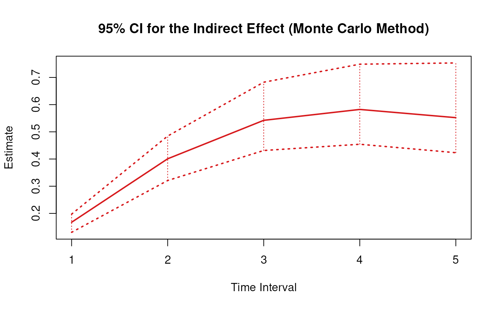
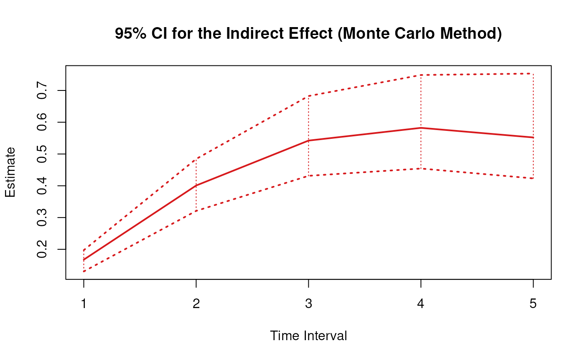

Monte Carlo Sampling Distribution of Total, Direct, and Indirect Effects of X on Y Through M Over a Specific Time-Interval or a Range of Time-Intervals
Source:R/cTMed-mc-med.R
MCMed.RdThis function generates a Monte Carlo method sampling distribution of the total, direct and indirect effects of the independent variable \(X\) on the dependent variable \(Y\) through mediator variables \(\mathbf{m}\) at a particular time-interval \(\Delta t\) using the first-order stochastic differential equation model drift matrix \(\boldsymbol{\Phi}\).
Usage
MCMed(
phi,
vcov_phi_vec,
delta_t,
from,
to,
med,
R,
test_phi = TRUE,
ncores = NULL,
seed = NULL
)Arguments
- phi
Numeric matrix. The drift matrix (\(\boldsymbol{\Phi}\)).
phishould have row and column names pertaining to the variables in the system.- vcov_phi_vec
Numeric matrix. The sampling variance-covariance matrix of \(\mathrm{vec} \left( \boldsymbol{\Phi} \right)\).
- delta_t
Numeric. Time interval (\(\Delta t\)).
- from
Character string. Name of the independent variable \(X\) in
phi.- to
Character string. Name of the dependent variable \(Y\) in
phi.- med
Character vector. Name/s of the mediator variable/s in
phi.- R
Positive integer. Number of replications.
- test_phi
Logical. If
test_phi = TRUE, the function runsTestPhi()on the generated drift matrix \(\boldsymbol{\Phi}\). If theTestPhi()returnsFALSE, the function generates a new drift matrix \(\boldsymbol{\Phi}\) and runs the test recursively untilTestPhi()returnsTRUE.- ncores
Positive integer. Number of cores to use. If
ncores = NULL, use a single core. Consider using multiple cores when number of replicationsRis a large value.- seed
Random seed.
Value
Returns an object
of class ctmedmc which is a list with the following elements:
- call
Function call.
- args
Function arguments.
- fun
Function used (MCMed).
- output
A list with length of
length(delta_t).
Each element in the output list has the following elements:
- est
A vector of total, direct, and indirect effects.
- thetahatstar
A matrix of Monte Carlo total, direct, and indirect effects.
Details
See Total(),
Direct(), and
Indirect() for more details.
Monte Carlo Method
Let \(\boldsymbol{\theta}\) be \(\mathrm{vec} \left( \boldsymbol{\Phi} \right)\), that is, the elements of the \(\boldsymbol{\Phi}\) matrix in vector form sorted column-wise. Let \(\hat{\boldsymbol{\theta}}\) be \(\mathrm{vec} \left( \hat{\boldsymbol{\Phi}} \right)\). Based on the asymptotic properties of maximum likelihood estimators, we can assume that estimators are normally distributed around the population parameters. $$ \hat{\boldsymbol{\theta}} \sim \mathcal{N} \left( \boldsymbol{\theta}, \mathbb{V} \left( \hat{\boldsymbol{\theta}} \right) \right) $$ Using this distributional assumption, a sampling distribution of \(\hat{\boldsymbol{\theta}}\) which we refer to as \(\hat{\boldsymbol{\theta}}^{\ast}\) can be generated by replacing the population parameters with sample estimates, that is, $$ \hat{\boldsymbol{\theta}}^{\ast} \sim \mathcal{N} \left( \hat{\boldsymbol{\theta}}, \hat{\mathbb{V}} \left( \hat{\boldsymbol{\theta}} \right) \right) . $$ Let \(\mathbf{g} \left( \hat{\boldsymbol{\theta}} \right)\) be a parameter that is a function of the estimated parameters. A sampling distribution of \(\mathbf{g} \left( \hat{\boldsymbol{\theta}} \right)\) , which we refer to as \(\mathbf{g} \left( \hat{\boldsymbol{\theta}}^{\ast} \right)\) , can be generated by using the simulated estimates to calculate \(\mathbf{g}\). The standard deviations of the simulated estimates are the standard errors. Percentiles corresponding to \(100 \left( 1 - \alpha \right) \%\) are the confidence intervals.
Linear Stochastic Differential Equation Model
The measurement model is given by $$ \mathbf{y}_{i, t} = \boldsymbol{\nu} + \boldsymbol{\Lambda} \boldsymbol{\eta}_{i, t} + \boldsymbol{\varepsilon}_{i, t}, \quad \mathrm{with} \quad \boldsymbol{\varepsilon}_{i, t} \sim \mathcal{N} \left( \mathbf{0}, \boldsymbol{\Theta} \right) $$ where \(\mathbf{y}_{i, t}\), \(\boldsymbol{\eta}_{i, t}\), and \(\boldsymbol{\varepsilon}_{i, t}\) are random variables and \(\boldsymbol{\nu}\), \(\boldsymbol{\Lambda}\), and \(\boldsymbol{\Theta}\) are model parameters. \(\mathbf{y}_{i, t}\) represents a vector of observed random variables, \(\boldsymbol{\eta}_{i, t}\) a vector of latent random variables, and \(\boldsymbol{\varepsilon}_{i, t}\) a vector of random measurement errors, at time \(t\) and individual \(i\). \(\boldsymbol{\nu}\) denotes a vector of intercepts, \(\boldsymbol{\Lambda}\) a matrix of factor loadings, and \(\boldsymbol{\Theta}\) the covariance matrix of \(\boldsymbol{\varepsilon}\).
An alternative representation of the measurement error is given by $$ \boldsymbol{\varepsilon}_{i, t} = \boldsymbol{\Theta}^{\frac{1}{2}} \mathbf{z}_{i, t}, \quad \mathrm{with} \quad \mathbf{z}_{i, t} \sim \mathcal{N} \left( \mathbf{0}, \mathbf{I} \right) $$ where \(\mathbf{z}_{i, t}\) is a vector of independent standard normal random variables and \( \left( \boldsymbol{\Theta}^{\frac{1}{2}} \right) \left( \boldsymbol{\Theta}^{\frac{1}{2}} \right)^{\prime} = \boldsymbol{\Theta} . \)
The dynamic structure is given by $$ \mathrm{d} \boldsymbol{\eta}_{i, t} = \left( \boldsymbol{\iota} + \boldsymbol{\Phi} \boldsymbol{\eta}_{i, t} \right) \mathrm{d}t + \boldsymbol{\Sigma}^{\frac{1}{2}} \mathrm{d} \mathbf{W}_{i, t} $$ where \(\boldsymbol{\iota}\) is a term which is unobserved and constant over time, \(\boldsymbol{\Phi}\) is the drift matrix which represents the rate of change of the solution in the absence of any random fluctuations, \(\boldsymbol{\Sigma}\) is the matrix of volatility or randomness in the process, and \(\mathrm{d}\boldsymbol{W}\) is a Wiener process or Brownian motion, which represents random fluctuations.
References
Bollen, K. A. (1987). Total, direct, and indirect effects in structural equation models. Sociological Methodology, 17, 37. doi:10.2307/271028
Deboeck, P. R., & Preacher, K. J. (2015). No need to be discrete: A method for continuous time mediation analysis. Structural Equation Modeling: A Multidisciplinary Journal, 23 (1), 61–75. doi:10.1080/10705511.2014.973960
Ryan, O., & Hamaker, E. L. (2021). Time to intervene: A continuous-time approach to network analysis and centrality. Psychometrika, 87 (1), 214–252. doi:10.1007/s11336-021-09767-0
See also
Other Continuous Time Mediation Functions:
DeltaMed(),
Direct(),
Indirect(),
MCPhi(),
Med(),
PosteriorMed(),
TestPhi(),
TestStable(),
Total()
Examples
data("deboeck2015phi", package = "cTMed")
phi <- deboeck2015phi$dynr$phi
vcov_phi_vec <- deboeck2015phi$dynr$vcov
# Specific time-interval ----------------------------------------------------
MCMed(
phi = phi,
vcov_phi_vec = vcov_phi_vec,
delta_t = 1,
from = "x",
to = "y",
med = "m",
R = 5 # use a large value for R in actual research
)
#> $`1`
#> interval est se R 2.5% 97.5%
#> total 1 -0.1175 0.0106 5 -0.1444 -0.1208
#> direct 1 -0.3052 0.0126 5 -0.3297 -0.3015
#> indirect 1 0.1877 0.0137 5 0.1588 0.1917
#>
# Range of time-intervals ---------------------------------------------------
mc <- MCMed(
phi = phi,
vcov_phi_vec = vcov_phi_vec,
delta_t = 1:20,
from = "x",
to = "y",
med = "m",
R = 5 # use a large value for R in actual research
)
# Methods -------------------------------------------------------------------
# MCMed has a number of methods including
# print, summary, confint, and plot
print(mc)
#> $`1`
#> interval est se R 2.5% 97.5%
#> total 1 -0.1175 0.0125 5 -0.1307 -0.1044
#> direct 1 -0.3052 0.0158 5 -0.3116 -0.2714
#> indirect 1 0.1877 0.0185 5 0.1624 0.2033
#>
#> $`2`
#> interval est se R 2.5% 97.5%
#> total 2 0.0896 0.0283 5 0.0578 0.1184
#> direct 2 -0.3547 0.0134 5 -0.3561 -0.3261
#> indirect 2 0.4444 0.0335 5 0.3892 0.4669
#>
#> $`3`
#> interval est se R 2.5% 97.5%
#> total 3 0.2856 0.0350 5 0.2396 0.3168
#> direct 3 -0.3146 0.0173 5 -0.3258 -0.2841
#> indirect 3 0.6001 0.0371 5 0.5245 0.6161
#>
#> $`4`
#> interval est se R 2.5% 97.5%
#> total 4 0.3966 0.0342 5 0.3378 0.4225
#> direct 4 -0.2521 0.0221 5 -0.2664 -0.2185
#> indirect 4 0.6487 0.0400 5 0.5595 0.6548
#>
#> $`5`
#> interval est se R 2.5% 97.5%
#> total 5 0.4311 0.0356 5 0.3624 0.4519
#> direct 5 -0.1924 0.0246 5 -0.2120 -0.1594
#> indirect 5 0.6235 0.0488 5 0.5258 0.6307
#>
#> $`6`
#> interval est se R 2.5% 97.5%
#> total 6 0.4150 0.0425 5 0.3385 0.4334
#> direct 6 -0.1429 0.0249 5 -0.1693 -0.1129
#> indirect 6 0.5579 0.0602 5 0.4545 0.5916
#>
#> $`7`
#> interval est se R 2.5% 97.5%
#> total 7 0.3717 0.0505 5 0.2920 0.4070
#> direct 7 -0.1045 0.0237 5 -0.1339 -0.0785
#> indirect 7 0.4762 0.0693 5 0.3730 0.5369
#>
#> $`8`
#> interval est se R 2.5% 97.5%
#> total 8 0.3174 0.0559 5 0.2396 0.3670
#> direct 8 -0.0758 0.0217 5 -0.1053 -0.0540
#> indirect 8 0.3932 0.0739 5 0.2954 0.4723
#>
#> $`9`
#> interval est se R 2.5% 97.5%
#> total 9 0.2622 0.0575 5 0.1903 0.3231
#> direct 9 -0.0546 0.0193 5 -0.0826 -0.0368
#> indirect 9 0.3168 0.0740 5 0.2283 0.4057
#>
#> $`10`
#> interval est se R 2.5% 97.5%
#> total 10 0.2113 0.0558 5 0.1477 0.2771
#> direct 10 -0.0392 0.0168 5 -0.0647 -0.0250
#> indirect 10 0.2505 0.0703 5 0.1736 0.3418
#>
#> $`11`
#> interval est se R 2.5% 97.5%
#> total 11 0.1671 0.0517 5 0.1131 0.2328
#> direct 11 -0.0281 0.0143 5 -0.0506 -0.0170
#> indirect 11 0.1952 0.0642 5 0.1306 0.2835
#>
#> $`12`
#> interval est se R 2.5% 97.5%
#> total 12 0.1302 0.0461 5 0.0857 0.1922
#> direct 12 -0.0201 0.0121 5 -0.0396 -0.0115
#> indirect 12 0.1503 0.0566 5 0.0976 0.2318
#>
#> $`13`
#> interval est se R 2.5% 97.5%
#> total 13 0.1002 0.0398 5 0.0646 0.1562
#> direct 13 -0.0144 0.0100 5 -0.0310 -0.0077
#> indirect 13 0.1146 0.0485 5 0.0726 0.1872
#>
#> $`14`
#> interval est se R 2.5% 97.5%
#> total 14 0.0764 0.0335 5 0.0485 0.1253
#> direct 14 -0.0103 0.0083 5 -0.0243 -0.0052
#> indirect 14 0.0867 0.0406 5 0.0539 0.1495
#>
#> $`15`
#> interval est se R 2.5% 97.5%
#> total 15 0.0578 0.0276 5 0.0364 0.0992
#> direct 15 -0.0074 0.0068 5 -0.0190 -0.0035
#> indirect 15 0.0652 0.0334 5 0.0400 0.1182
#>
#> $`16`
#> interval est se R 2.5% 97.5%
#> total 16 0.0434 0.0223 5 0.0273 0.0776
#> direct 16 -0.0053 0.0055 5 -0.0149 -0.0024
#> indirect 16 0.0487 0.0269 5 0.0297 0.0925
#>
#> $`17`
#> interval est se R 2.5% 97.5%
#> total 17 0.0324 0.0177 5 0.0204 0.0600
#> direct 17 -0.0038 0.0044 5 -0.0116 -0.0016
#> indirect 17 0.0362 0.0214 5 0.0220 0.0717
#>
#> $`18`
#> interval est se R 2.5% 97.5%
#> total 18 0.0241 0.0139 5 0.0153 0.0459
#> direct 18 -0.0027 0.0036 5 -0.0091 -0.0011
#> indirect 18 0.0268 0.0167 5 0.0164 0.0550
#>
#> $`19`
#> interval est se R 2.5% 97.5%
#> total 19 0.0178 0.0107 5 0.0115 0.0347
#> direct 19 -0.0019 0.0029 5 -0.0071 -0.0007
#> indirect 19 0.0197 0.0129 5 0.0122 0.0418
#>
#> $`20`
#> interval est se R 2.5% 97.5%
#> total 20 0.0131 0.0082 5 0.0086 0.0259
#> direct 20 -0.0014 0.0023 5 -0.0056 -0.0005
#> indirect 20 0.0145 0.0099 5 0.0091 0.0315
#>
summary(mc)
#> effect interval est se R 2.5% 97.5%
#> 1 total 1 -0.117484662 0.012458510 5 -0.130713913 -0.1044238488
#> 2 direct 1 -0.305215245 0.015827934 5 -0.311626350 -0.2713675280
#> 3 indirect 1 0.187730583 0.018524082 5 0.162448621 0.2032751144
#> 4 total 2 0.089649670 0.028280901 5 0.057800342 0.1184208048
#> 5 direct 2 -0.354707332 0.013413574 5 -0.356086627 -0.3261296618
#> 6 indirect 2 0.444357002 0.033516715 5 0.389206237 0.4669238319
#> 7 total 3 0.285551674 0.035011150 5 0.239624244 0.3167938391
#> 8 direct 3 -0.314584160 0.017265715 5 -0.325836609 -0.2840860298
#> 9 indirect 3 0.600135834 0.037063350 5 0.524521700 0.6161264549
#> 10 total 4 0.396605704 0.034230594 5 0.337810731 0.4224680659
#> 11 direct 4 -0.252121939 0.022132620 5 -0.266368919 -0.2185289285
#> 12 indirect 4 0.648727643 0.039963767 5 0.559465475 0.6547960467
#> 13 total 5 0.431122443 0.035641141 5 0.362382617 0.4519243367
#> 14 direct 5 -0.192366877 0.024603755 5 -0.212001559 -0.1594358156
#> 15 indirect 5 0.623489320 0.048803597 5 0.525796482 0.6307184532
#> 16 total 6 0.415038108 0.042534451 5 0.338505602 0.4334460814
#> 17 direct 6 -0.142904381 0.024899352 5 -0.169336351 -0.1128918726
#> 18 indirect 6 0.557942490 0.060204720 5 0.454519236 0.5915753651
#> 19 total 7 0.371690575 0.050503502 5 0.292035871 0.4069962720
#> 20 direct 7 -0.104537400 0.023739629 5 -0.133919043 -0.0785038782
#> 21 indirect 7 0.476227975 0.069303994 5 0.372961929 0.5368733396
#> 22 total 8 0.317412261 0.055863847 5 0.239640938 0.3669540133
#> 23 direct 8 -0.075772453 0.021732775 5 -0.105332111 -0.0539757171
#> 24 indirect 8 0.393184713 0.073944276 5 0.295395429 0.4722861248
#> 25 total 9 0.262156401 0.057527721 5 0.190252906 0.3230628509
#> 26 direct 9 -0.054617018 0.019315929 5 -0.082612618 -0.0368425919
#> 27 indirect 9 0.316773419 0.074000936 5 0.228349859 0.4056754687
#> 28 total 10 0.211258400 0.055844427 5 0.147747580 0.2771382105
#> 29 direct 10 -0.039233252 0.016784862 5 -0.064700569 -0.0250295570
#> 30 indirect 10 0.250491651 0.070342971 5 0.173633773 0.3418387795
#> 31 total 11 0.167073060 0.051709357 5 0.113074432 0.2328220025
#> 32 direct 11 -0.028122716 0.014328820 5 -0.050637634 -0.0169519303
#> 33 indirect 11 0.195195777 0.064157235 5 0.130595720 0.2834596363
#> 34 total 12 0.130190355 0.046092937 5 0.085724778 0.1921873392
#> 35 direct 12 -0.020131937 0.012059242 5 -0.039620361 -0.0114581336
#> 36 indirect 12 0.150322292 0.056578046 5 0.097552127 0.2318077002
#> 37 total 13 0.100248253 0.039825455 5 0.064610485 0.1562398926
#> 38 direct 13 -0.014399758 0.010032542 5 -0.030998258 -0.0077347404
#> 39 indirect 13 0.114648012 0.048521974 5 0.072578962 0.1872381507
#> 40 total 14 0.076439602 0.033525675 5 0.048530890 0.1252877565
#> 41 direct 14 -0.010294390 0.008267933 5 -0.024253783 -0.0052169988
#> 42 indirect 14 0.086733992 0.040645474 5 0.053892143 0.1495415399
#> 43 total 15 0.057809232 0.027603554 5 0.036387938 0.0992058005
#> 44 direct 15 -0.007357084 0.006760946 5 -0.018978866 -0.0035170406
#> 45 indirect 15 0.065166316 0.033366242 5 0.039991446 0.1181846663
#> 46 total 16 0.043415873 0.022295160 5 0.027262585 0.0776196611
#> 47 direct 16 -0.005256817 0.005493282 5 -0.014853253 -0.0023703331
#> 48 indirect 16 0.048672691 0.026910521 5 0.029682887 0.0924729138
#> 49 total 17 0.032411079 0.017706350 5 0.020422615 0.0600302953
#> 50 direct 17 -0.003755649 0.004439661 5 -0.011626213 -0.0015972776
#> 51 indirect 17 0.036166728 0.021364998 5 0.022047344 0.0716565087
#> 52 total 18 0.024069586 0.013853618 5 0.015301405 0.0458955063
#> 53 direct 18 -0.002682950 0.003572348 5 -0.009101677 -0.0010763018
#> 54 indirect 18 0.026752536 0.016722951 5 0.016391639 0.0549971835
#> 55 total 19 0.017792908 0.010697454 5 0.011468024 0.0346809187
#> 56 direct 19 -0.001916543 0.002863953 5 -0.007126396 -0.0007252712
#> 57 indirect 19 0.019709451 0.012920900 5 0.012199380 0.0418073149
#> 58 total 20 0.013099439 0.008167307 5 0.008598000 0.0258897072
#> 59 direct 20 -0.001369024 0.002289032 5 -0.005580612 -0.0004887654
#> 60 indirect 20 0.014468463 0.009865497 5 0.009088501 0.0314703192
confint(mc, level = 0.95)
#> effect interval 2.5 % 97.5 %
#> 1 total 1 -0.130713913 -0.1044238488
#> 2 direct 1 -0.311626350 -0.2713675280
#> 3 indirect 1 0.162448621 0.2032751144
#> 4 total 2 0.057800342 0.1184208048
#> 5 direct 2 -0.356086627 -0.3261296618
#> 6 indirect 2 0.389206237 0.4669238319
#> 7 total 3 0.239624244 0.3167938391
#> 8 direct 3 -0.325836609 -0.2840860298
#> 9 indirect 3 0.524521700 0.6161264549
#> 10 total 4 0.337810731 0.4224680659
#> 11 direct 4 -0.266368919 -0.2185289285
#> 12 indirect 4 0.559465475 0.6547960467
#> 13 total 5 0.362382617 0.4519243367
#> 14 direct 5 -0.212001559 -0.1594358156
#> 15 indirect 5 0.525796482 0.6307184532
#> 16 total 6 0.338505602 0.4334460814
#> 17 direct 6 -0.169336351 -0.1128918726
#> 18 indirect 6 0.454519236 0.5915753651
#> 19 total 7 0.292035871 0.4069962720
#> 20 direct 7 -0.133919043 -0.0785038782
#> 21 indirect 7 0.372961929 0.5368733396
#> 22 total 8 0.239640938 0.3669540133
#> 23 direct 8 -0.105332111 -0.0539757171
#> 24 indirect 8 0.295395429 0.4722861248
#> 25 total 9 0.190252906 0.3230628509
#> 26 direct 9 -0.082612618 -0.0368425919
#> 27 indirect 9 0.228349859 0.4056754687
#> 28 total 10 0.147747580 0.2771382105
#> 29 direct 10 -0.064700569 -0.0250295570
#> 30 indirect 10 0.173633773 0.3418387795
#> 31 total 11 0.113074432 0.2328220025
#> 32 direct 11 -0.050637634 -0.0169519303
#> 33 indirect 11 0.130595720 0.2834596363
#> 34 total 12 0.085724778 0.1921873392
#> 35 direct 12 -0.039620361 -0.0114581336
#> 36 indirect 12 0.097552127 0.2318077002
#> 37 total 13 0.064610485 0.1562398926
#> 38 direct 13 -0.030998258 -0.0077347404
#> 39 indirect 13 0.072578962 0.1872381507
#> 40 total 14 0.048530890 0.1252877565
#> 41 direct 14 -0.024253783 -0.0052169988
#> 42 indirect 14 0.053892143 0.1495415399
#> 43 total 15 0.036387938 0.0992058005
#> 44 direct 15 -0.018978866 -0.0035170406
#> 45 indirect 15 0.039991446 0.1181846663
#> 46 total 16 0.027262585 0.0776196611
#> 47 direct 16 -0.014853253 -0.0023703331
#> 48 indirect 16 0.029682887 0.0924729138
#> 49 total 17 0.020422615 0.0600302953
#> 50 direct 17 -0.011626213 -0.0015972776
#> 51 indirect 17 0.022047344 0.0716565087
#> 52 total 18 0.015301405 0.0458955063
#> 53 direct 18 -0.009101677 -0.0010763018
#> 54 indirect 18 0.016391639 0.0549971835
#> 55 total 19 0.011468024 0.0346809187
#> 56 direct 19 -0.007126396 -0.0007252712
#> 57 indirect 19 0.012199380 0.0418073149
#> 58 total 20 0.008598000 0.0258897072
#> 59 direct 20 -0.005580612 -0.0004887654
#> 60 indirect 20 0.009088501 0.0314703192
plot(mc)

 
